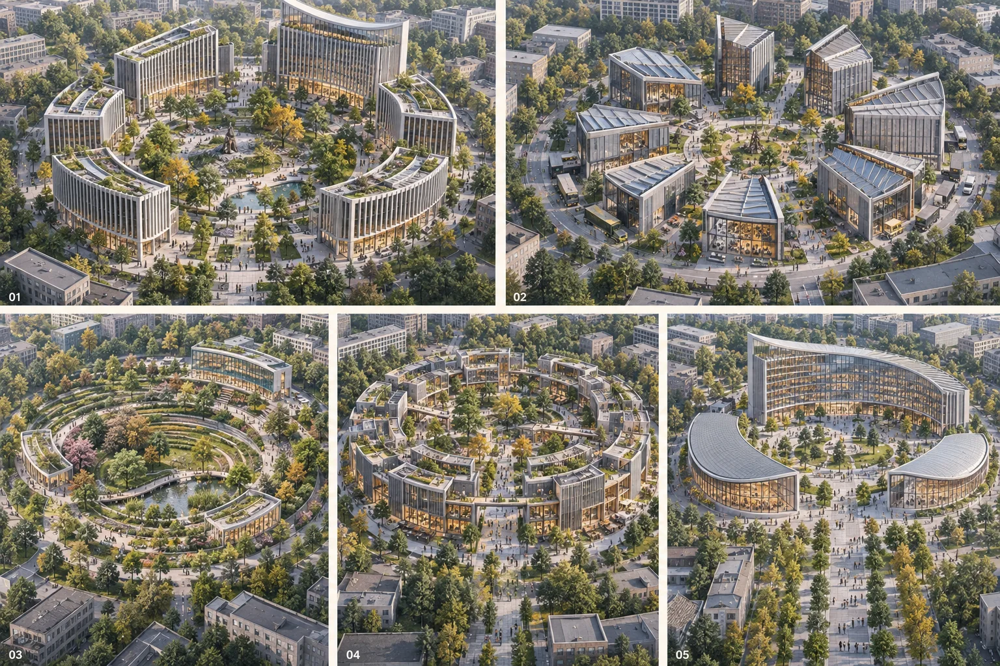

Jing-Zhang Civic Constellation · BM0 | From Haidian Civilization to an Intelligent Commons
Along Jing-Zhang, five circular ensembles form a memorable public landmark family: garden sequences, Haidian academic inquiry and Zhongguancun making become five open courts with distinct uses. BM0 connects public review, fabrication and upkeep; innovators bring questions and leave work and shared knowledge. All spatial and operating arrangements are conceptual suggestions.
Jing-Zhang Civic Constellation · BM0
From Haidian Civilization to an Intelligent Commons. The international identity is Jing-Zhang Civic Constellation / BENCHMARK ZERO, with the invitation Bring a question. Make it real. BM0 is an original design mark borrowing the meaning of a bench mark, not an existing surveying monument or a registered trademark. We want a place remembered for use: read in a garden, disagree around a table, turn to make an idea tangible, then bring it back for testing. Public calibration is a working method within urban life, not its entirety Source.
Jing-Zhang, gardens and the academy share a specific history. Tsinghua's history museum records that Qinghuayuan station served the school's material deliveries and passenger access; rail travel also supported visits to the western gardens. This inspires a corridor where knowledge, making and public life meet. The Qinglongqiao switchback is not a surviving alignment inside this Haidian site. The sequence "survey—set datum—diverge—trial—maintain" is a contemporary design method, not a claimed historical construction sequence Source.

Turning Haidian Civilization into Space
Four roots, one Jing-Zhang corridor
The Three Hills and Five Gardens inform the local spatial character without turning the site into a replica imperial attraction. Walking sequences, framed views, density and open space become courts where work and strolling coexist. Actual views, trees and hydrology need surveys; views of the Western Hills are not assumed at every location. Yanyuan's transformation from historic gardens into a modern campus is a documented local reference for learning in gardens. Peking University moved to Yanyuan in 1952: its May Fourth-era campus must not be relocated here in the narrative Source Source.
Zhongguancun matters beyond company density. Its electronics-street practice, encounters between research and markets, and tolerance for experimentation inspire visible ground-floor making, repair and review. The right-hand columns below are design interpretations, not historical facilities or agreed institutional partnerships Source.
| Local basis | Spatial decision and placement | Everyday institution | What is lost if the local condition is removed? |
|---|---|---|---|
| Three Hills and Five Gardens; Haidian garden network | Quiet garden west of the Origin; alternating courts along the green corridor; open space before imitation | Sit and read without buying anything; no screens or amplified sound in the quiet garden | The local lineage of gardens adjoining knowledge life; the landscape narrative must be remade |
| Gardens and modern academic campuses | Review table beside a reading court, facing the public cross-passage | Weekly open discussion with recorded disagreement and evidence; no degree requirement | The local academic network supplying questions and collaborators, not a course list transferable by renaming |
| Zhongguancun making and experimentation | Zhongzhiyuan making porch; small repair benches at the Origin linked to the service wing | Parts lending, open-source maintenance and repair; honour not ranked by fundraising | Local research, engineering and service relationships; supply and mentoring need rebuilding |
| Jing-Zhang and Qinghuayuan station's school-transport history | North–south heritage-park spine joins the three key areas; east–west passages join neighbourhoods | Signs record questions, authors, methods and revision dates; additions avoid heritage | Railway–academy co-development and the taskbook's named three-area relationship |
| Dazhongsi culture, a supporting layer | Southern launch court and optional indoor sound interpretation | Work and maintenance records first; no ancient-bell operation or amplified announcements | The southern narrative changes, but garden–academy–innovation remains primary |
These relationships must be established specifically in Haidian; they are not a claim that innovation is exclusive to this place. Public methods can be shared, but history, spatial adjacency and collaborators cannot be transplanted without investigation Depth.

Landmark family: five circular ensembles along Jing-Zhang
Five Gardens means five recognisable circular spatial ensembles, not five identical buildings. Buildings, gardens, lanes and open courts share the outline: six independent crescent blocks rise around Inquiry Commons; separate workshop blades form Making Court; small independently usable blocks form Commons Streets; three crescents embrace Exchange Forum. Living Garden is primarily planting, landform and paths, with no new building in this model. Circular geometry is a contemporary invention, not a claim that the historical gardens were circular or an imitation of imperial architecture Source.
The whole-line plan retains a north-up, north-south corridor. The task names Zhongzhiyuan, Beijing AI Origin and Dazhongsi in that north-to-south order. Five Gardens responds through three principal landmarks and two intermediate gardens, not a compressed new campus. Segmented rising silhouettes and garden voids establish distant identity; entrances, workbenches, reading galleries and public crossings must make sense on foot, not only from a drone Source Metric.
| Ensemble | Concept public anchor | Spatial organisation in this model | Everyday Haidian connection |
|---|---|---|---|
| Making Court | Zhongzhiyuan PUB-ZZY | Eight workshop segments around a work court; deliveries and hazardous work avoid the public porch | Zhongguancun research, engineering and repair: borrow parts, make prototypes, verify in controlled settings |
| Living Garden | PUB-N3 | Landscape-led; no new building in this model; protect trees and habitats after surveys | Translate garden walking and open space into everyday observation without compulsory consumption |
| Inquiry Commons | AI Origin PUB-BM0 | Six independent crescent blocks around a reading garden, with full-height passage gaps | Academic questions, discussion and solitude meet local knowledge networks and public review |
| Commons Streets | PUB-N2 | Eight smaller work blocks form an open circular street, without gated-campus access | Open-source collaboration, neighbourhood repair and short residencies share divisible units |
| Exchange Forum | Dazhongsi PUB-DZS | Three crescents frame an arrival court; ground-floor display and human reception adjoin | Jing-Zhang structures arrival and exchange; Dazhongsi remains supporting culture, without operating the ancient bell |
The four building-led ensembles have segmented footprints within eastern non-green functional cells of the provisional model. Living remains a landscape node, while four earlier conceptual infill functions remain with rearranged footprints. This produces 29 footprint features, not 29 surveyed buildings or approved projects. Five ensembles, three principal landmarks and individual building segments are separate counts. The footprints make a reproducible conceptual siting scenario, not a selection of available actual parcels or permission for demolition, land use or construction Spatial data Metric Metric.


Image numbers identify types, not north-south order: 01 Inquiry, 02 Making, 03 Living, 04 Commons, 05 Exchange. Image03 is an earlier landscape-led comparison with low-rise amenities; the current selection retains only landscape and paths, excluding those buildings from the new-build model. Building counts and heights in the other images are not engineering measurements either. The model plan above and the geometry files define the current footprints and counts.
The family image compares architectural and landscape types without claiming real-world adjacency. Image building counts, floors and terraces are not measurements: formal model areas come from GeoJSON. The pedestrian view explores reading, making and passage; it is not evidence of resident consent or accessibility acceptance. Hazardous experiments require independently controlled settings; ordinary public and no-device routes remain outside test boundaries Depth.
How three flowing ridges connect five gardens
Three ridges are three public connections with different everyday uses, not three kilometre-long buildings. Reading Ridge links Making-Living-Inquiry, Making Ridge links Inquiry-Commons, and Meeting Ridge links Commons-Exchange. Shared nodes form a connected network of five nodes and four edges. A level public route along Jing-Zhang carries basic passage; local planted slopes, reading galleries, work porches, usable roofs and short links provide an undulating experience. Closing a local facility must not sever the ground route Spatial data Depth.
| Ridge | Connection and use | Form and operating boundary |
|---|---|---|
| Reading / north | Making-Living-Inquiry: from fabrication through observation to public discussion | Predominantly ground-level garden paths, with local planted slopes and reading shelters; no amplified events in quiet areas |
| Making / middle | Inquiry-Commons: turn discussion into testable, repairable work | Local occupied workshop roofs and canopies; separate public passage, deliveries and tests |
| Meeting / south | Commons-Exchange: display, exchange and maintenance handover | Ground-level demonstration walk, local forum roof and rain shelter; daily passage avoids tickets and event-security zones |
Straight distances between provisional node centres total about 3.11, 2.43 and 1.94 km by section. They describe urban connections, not bridge spans or surveyed road lengths. Every road, railway, heritage, river and existing-project interface needs separate checks. No active-rail crossing, fully elevated public realm or lift-dependent sole accessible route is assumed. Roof edges, drainage, snow, wind, fire safety and structure require professional review; stopping experiments must not obstruct ordinary passage Depth Depth.

Five candidate pedestrian approach spurs also connect the existing conceptual road network to open gaps in the ensembles, recorded in visual/assets/ensemble-model.json without crossing proposed footprints. They are unverified scenarios, excluded from the existing road-length metric, and do not establish tree, terrain, ownership or crossing permission. The assumed12 m clearance from model road centrelines only avoids obvious collisions; it is not a statutory setback.
Height: use applicable conditions, not the highest number everywhere
Some public controls have been located, so the proposal no longer says that height controls are entirely unpublished. Actual parcels, ownership and all applicable constraints are not yet matched to the five ensembles: statutory heights, FAR and confirmed buildable scale remain pending. Page 8 of the public Jing-Zhang block plan lists baseline zones of 36/45/60/80/100 m; page 9 addresses view protection and layered spatial form. Its northern edge is Chengfu Road, not the entire open-call corridor up to the North Fifth Ring. A 100 m zone is not permission for every garden Source.
The north Xueyuan A/B/C/J conditions list 80 m in the page-1 table, but page 2 further distinguishes a maximum 60 m centre in A and approximately 70 m in B/J. The table alone is insufficient. Lanjinglijia's supply conditions list 60 m and 24 m on page 2; page 3 adds restrictions and floor-area treatment for links. Its existing project is not a blank site. Match heights, views, daylight, setbacks, trees, rail and ongoing projects parcel by parcel before exploring a high point close to the applicable limit Source Source Source.
An Inquiry type study compares 60/80 m envelopes with a 200 m outer diameter, 150 m inner garden and six full-height gaps. These are design assumptions for testing whether an entire ring needs equal height, not proof of actual parcel capacity. Other gardens need not match that height; Living Garden does not depend on a tall building. If a site cannot carry the form, reduce its diameter or mass, or adapt existing buildings, rather than retaining rendering scale and hiding conflicts Depth Depth.

A credible invitation: bring a question, leave working knowledge
The following is a pilot institution for operators to develop, not an available service. A proposed 64-day residency cycle uses days 1–7 to understand local questions and rights; days 8–28 to make; days 29–49 to test in authorised settings; and days 50–64 to demonstrate and hand over maintenance. Sixty-four days is an organising rhythm, not proof of safety or long-term effectiveness Depth.
| What a visitor needs | Proposed pilot offer | Responsibility and verification |
|---|---|---|
| Start without first becoming famous | Public questions, basic workbench and low-risk tool induction; some places for unaffiliated applicants | Proposed operator publishes capacity, reasons and appeals; no promised free housing or visas |
| Find collaborators | Groups of local question-setters, researchers, engineers and international maintainers | Obtain each partner's consent; universities and firms are not pre-announced as signed partners |
| Time to fail and retry | Weekly repair tables and monthly reproduction days; failures can be exhibited | Contributors choose disclosure and licensing in advance; no sensitive code or personal data published |
| More than one conference visit | Name a maintenance contact for 90 days after handover; annual return invitations based on upkeep | Measure resolved questions, reproducibility, maintained outputs and resident feedback, not check-ins or recruitment counts |
Ordinary days matter more than festivals: morning reading and questions, afternoon making and repair, small evening demonstrations. Winter work moves to legally available indoor ground floors; summer uses shade and ventilated courts. Events do not amplify sound into the quiet garden. Lighting-control faults revert to safe baseline illumination. Residents can use the entire public route without registration, scanning a code or participating in tests Standard.

Test for lasting value, do not certify a classic in advance
Validate public use before fixing a permanent form. Start with movable tables and workbenches in lawful existing venues; without funded operations, accountable staff, heritage clearance and safety permissions, do not start. Publish weekly opening hours, maintenance downtime, noise-complaint resolution and any impact on public passage. At the end, seek feedback from participants and non-participating residents separately. If the project depends on persistent closure, giant-screen promotion or compulsory data collection, remove the experimental equipment and retain ordinary park use Depth.
Maintain the long-lived public structure, replaceable technical components and short-cycle software separately. Do not tie identity to a single model or supplier. Remaining worth visiting without a launch event, screen or newest device is a condition for lasting value, not an already demonstrated outcome.

Design Basis and Source Inventory
The primary basis is the "Centennial Jing-Zhang AI Innovation Belt International Urban Design Call for Proposals" pre-qualification announcement issued by the Haidian Branch of the Beijing Municipal Commission of Planning and Natural Resources, with the taskbook, enums, planning limits and source registry in brief/site-package/ as machine-readable basis Source Source. The proposal separates facts from design suggestions from items awaiting professional confirmation: verifiable facts carry evidence, design judgments carry intent, and gaps read "to be completed when official data arrives" — no plausible-looking parameter is used to manufacture certainty.
The organiser has not yet released an official precise polygon. This proposal uses the repository's clearly marked provisional boundary SITE-001 and the three key areas, all flagged provisional_constraint with official_boundary=false Source Spatial data. They serve concept generation, spatial review and self-check only; they are not an official redline, an approval basis, or a basis for precise areas. When official geometry arrives, all nine layers, every metric, the figures and the PDFs must be recomputed from the boundary as a whole Depth. This organiser-side data gap does not itself block content scoring.
The provisional model is a narrow north–south corridor, about 1.4 km wide and 9.7 km long, with a width-to-length ratio of about 0.14. These are model extents, not surveyed redlines. The linear condition makes longitudinal continuity and cross-corridor connections equally important; it does not prove that a Y form is unique to this site Metric Metric Metric.

Three-Level Scope Framework
The coordinated research area answers "how Haidian organises research, industry, public services and global collaboration into a sustainable calibration system"; the overall design area answers "how an 11.41 km² corridor becomes a continuous system through one walkable green axis plus a set of callable calibration nodes"; the three key areas answer "how a calibration ground makes, reviews, first-uses and retires an AI product in a concrete place" Depth. The three levels are not three unrelated circles but three scales of one Y Depth.
The Y is only a conceptual diagram of work returning for revision, not a site railway or parcel shape. Qinglongqiao inspires the method of returning after trials. The actual proposal follows the submitted north–south green spine and east–west crossings. The following diagram is not geographical or to scale and does not turn the three areas and two wings into three literal rail lines:
Zhongzhiyuan ● (Y north end · make & verify / Leg A)
╲
╲ datum line: results return for review
╲
Zhongguancun service wing ────●──── junction BM0: AI Origin community (ask & set standards)
(global factor allocation) ╱
╱ return line: calibrated results go south
╱
Dazhongsi ● (Y south end · launch & first use / Leg B)The AI Origin community hosts inquiry and review, Zhongzhiyuan making and verification, and Dazhongsi public demonstration and first use, with repeated journeys between them. A return means revising work after feedback, not reenacting historical train operations Spatial data.
The three positionings, five functions and three-areas-two-wings of the taskbook are not parallel slogans but a closed loop joined by one Y. The table below maps each item (the "positioning–function–areas-wings" master table) Source Standard:
| Level | Taskbook requirement | BM0 spatial–operational response | Verifiable output |
|---|---|---|---|
| Positioning | Centennial Jing-Zhang cultural belt | Central axis = Jing-Zhang heritage park calibration greenway; BM milestones at sleeper rhythm | Heritage narrative, open archive, year-round public life Spatial data |
| Positioning | Urban AI life experience belt | Central hard public band + neighbourhood squares; residents can enter, choose, exit | Daily AI experience, no-AI baseline routes Spatial data |
| Positioning | AI-integrated innovation belt | Y ends: ask (origin) → make (Zhongzhiyuan) → launch (Dazhongsi) | From world questions to open prototypes to city premieres Metric |
| Function | AI full-stack autonomous innovation | Zhongzhiyuan calibration court: benchmark grounds for models, chips, hardware, embodied systems | Full-stack validation, open evaluation Metric |
| Function | World-class AI innovation ecosystem | Origin open review: open-source collaboration, global hosting, youth life | Ecosystem-case mechanisms, developer community Metric |
| Function | AI+ scenario empowerment paradigm | Xiaoyuehe empowerment wing + real-life scenes on the axis | Open question calls, real-environment feedback Spatial data |
| Function | Intelligent AI vibrant city | Dazhongsi launch court: AI-native market, cultural shows, global launch week | AI-native formats, year-round event rhythm Spatial data |
| Function | Global voice in AI governance | Whole-line public maintenance log: who tested, how, is it verifiable | Human final authority, stop conditions, public records Standard |
| Area | Beijing AI Origin community | Y junction BM0: ask & set calibration standards | World-class AI innovation ecosystem Spatial data |
| Area | Zhongzhiyuan AI acceleration area | Leg A: make & verify | Full-stack autonomous innovation and AI governance Spatial data |
| Area | Dazhongsi AI industry cluster | Leg B: launch & first use | AI-native new formats Spatial data |
| Wing | Zhongguancun technology service wing | Outer rail: talent, capital, compute, data, professional uplink | Factor allocation, Zhongguancun IP and capital enablement |
| Wing | Xiaoyuehe scenario empowerment wing | Inner rail: residents, students, visitors, real-life downlink | Scenario empowerment and intelligent AI vibrant city |
Regional Collaboration Master Table (conceptual suggestions, not concluded agreements)
The taskbook explicitly requires collaboration with Beiwei community, Future Science City, Huairou Science City, Beijing E-Town and the Beijing–Tianjin–Hebei region. The table below defines only negotiable public interfaces; it fabricates no agreement, route, procurement, investment or settled policy. Each row's exchange object, direction and trigger condition is a conceptual suggestion for professional teams and the named parties to deepen Source Depth:
| Partner | Exchange object | Direction | Trigger condition | Evidence status |
|---|---|---|---|---|
| Beiwei community (Beixiaguan) | University knowledge, youth housing, renewal experience | Beiwei → Origin: talent and scenes; Origin → Beiwei: open review and events | When a Beiwei renewal project enters concept deepening | Public background material, no agreement Source |
| Future Science City | Big-science facilities, energy & materials frontier, supercompute | Future Science City → Zhongzhiyuan: hard-tech supply; Zhongzhiyuan → Future Science City: AI scenes and validation demand | When either side opens AI-oriented joint topics | Public background material, no agreement |
| Huairou Science City | Basic science, national labs, original innovation | Huairou → Origin: source questions; Origin → Huairou: open evaluation and benchmark demand | When a public benchmark topic is scoped | Public background material, no agreement |
| Beijing E-Town | Smart manufacturing, EV & robotics production, scene operation | E-Town → Dazhongsi: production and supply chain; Dazhongsi → E-Town: AI-native formats and premiere demand | When the embodied-intelligence safety ground moves from pilot to production validation | Public background material, no agreement |
| Beijing–Tianjin–Hebei | City-cluster scenes, data-flow pilots, industrial gradient | Cluster → belt: real scenes and data; belt → cluster: calibration standards and public logs | When regional data-flow pilots or scene-open lists are released | Public background material, no agreement |

Coordinated Research Area: Industry and Future-City Study
The industry positioning is not "build another AI park" but "connect Haidian's existing universities, open-source maintainers, enterprises and public-service operators into one public calibration institution" Depth. The five-step engineering chain becomes the industry logic directly:
- Survey: open problem calls are the "measurement" — learn what AI still does badly in the real city;
- Set datum: at BM0, make the definition of "done well" public and verifiable — that is the benchmark;
- Diverge: route products to the Zhongzhiyuan / Origin / Dazhongsi branches as "make — review — first use";
- Trial: run in the three calibration grounds and real environments, with humans keeping final authority;
- Maintain: the public maintenance log accumulates as a public knowledge asset, letting failure be seen, reviewed and improved.
Seven global cases are used only for auditable mechanisms; no case's form, brand or imagery is copied Source Metric:
| Case | Transferable mechanism | BM0 placement | Explicitly not copied |
|---|---|---|---|
| Mila (Montreal) | Open science and ethics community | Origin open review court | Organisational structure and brand |
| Kendall Square (Cambridge) | High-frequency public events drive knowledge diffusion | Central public band year-round event rhythm | Street pattern and density |
| Station F (Paris) | Phased residency and global soft landing | International visitor soft-landing port | Single building and operator |
| Knowledge Quarter (London) | Cross-institution governance and public knowledge | Belt public benchmark governance committee | Governance charter text |
| one-north (Singapore) | Incubator–community coupling | Zhongzhiyuan trial clusters + youth life | Architectural and landscape language |
| Seoul AI Hub (Seoul) | Phased support and outcome conversion | Three-phase validation path across the three areas | Subsidy policy model |
| Ars Electronica (Linz) | Public prototyping and art–tech dialogue | Dazhongsi launch court + sound field | Event brand and exhibitions |
Overall Design Area: Renewal at Regulatory-Detail Urban Design Depth
The overall design area is structured on the central green axis, with five bands laterally Spatial data Depth:
| Band | Share of width | Main function | Land-use code | BM0 role |
|---|---|---|---|---|
| West living band | 31% | Residential, community service, education | 0701/0702/0804 | Daily urban-life interface Spatial data |
| Axis public west band | 1.5% | Hard public activity | 1403 | Public edge of the calibration greenway Spatial data |
| Axis green corridor | 31.2% | Park green | 1401 | Trunk of the Y; BM milestone route Spatial data |
| Axis public east band | 4.6% | Hard public activity | 1403 | Public edge of the calibration greenway Spatial data |
| East innovation band | 31.7% | Research, retail, office | 0802/0901/0902 | Innovation, validation and launch interface |
The land-use partition is cut from the same provisional boundary, covering it completely with no gaps and no overlaps, and neighbouring polygons share cut-line coordinates Metric. Green space and public space are constructed to be disjoint (public space is differenced from green space), so the green ratio and the public-space ratio never double-count Metric. Buildings are expressed as conceptual prototypes and constitute neither approved buildings, retain/renovate/demolish conclusions, nor red lines Depth Depth. FAR, building height and total floor area stay pending official data because actual parcels and all applicable controls are not yet matched to the five ensembles; some public controls are now recorded in the height chapter, without extrapolation to the whole corridor Depth Metric.
Detailed Design of the Three Key Areas

The three key areas correspond to the three ends of the Y; each answers "how a calibration ground operates in a concrete place" Depth Spatial data:
Zhongzhiyuan AI autonomous acceleration area (Leg A · make & verify) Spatial data The calibration court is a real-environment benchmark ground for embodied intelligence and hardware: models, chips, robotic arms, low-speed robots and autonomous shuttles face real weather, real crowds and real failures. Every system under test is configured with six elements — a plain human baseline, a minimal data boundary, a responsible role, a stop condition, a 64-day review and an exit path Metric. Operating tests require independent controlled boundaries; restore eligible public space only after a safety recovery check.
Beijing AI Origin community (Y junction BM0 · ask & set standards) Spatial data The BM0 origin plaza is where calibration standards are born: the public problem board, open evaluation, red-team review and open-source collaboration all begin here. A zero bench-mark monument stands here — a proposed original public marker for touch and photographs, not an existing survey datum or approved monument. Standards are not set behind closed doors by experts; they are publicly questioned on this plaza, reviewed by residents, and revised version by version. The plaza has no tickets, is crossable, and remains usable on non-event days Metric.
Dazhongsi AI industry cluster (Leg B · launch & first use) Spatial data The launch court combines proposed work displays, human support and small markets. Dazhongsi is a supporting cultural layer: low-disturbance, switchable indoor sound interpretation may be studied, subject to rights clearance. No ancient bell is operated, no results are announced through amplification and no heritage or event permission is assumed. Works must disclose methods, limitations and maintenance arrangements.
AI Innovation Ecosystem, Talent Profiles and AI+ Scenarios
The Calibration Protocol: a minimum contract for every scenario
Every AI scenario must pass the "seven questions of the calibration protocol" before going live: ①who is served; ②what minimal data is used; ③what is the plain human baseline (how the task is done without AI); ④who is accountable; ⑤what is the stop condition; ⑥is it reviewed within 64 days; ⑦where is the exit path Standard Standard Depth. None of the seven may be missing, and the answers are public.
12 AI Scenario Cards (each: subject—place—data—human review—exit—operation—metric)
| Card | Scenario | Served | Place | Minimal data | Human review | Exit condition | Operator | Metric |
|---|---|---|---|---|---|---|---|---|
| SC-01 | Accessibility calibration | Wheelchair & vision-impaired users | Central public band Spatial data | On-site obstacle detection, no imagery kept | No-AI baseline + user review | Deactivate after 3 consecutive errors | Public-service operator | Passage success rate |
| SC-02 | Embodied-robot safety ground | Robotics firms & citizens | Zhongzhiyuan calibration court Spatial data | In-fence sensor data | Manual e-stop + perimeter safety officer | Stop when braking distance exceeds threshold | Zhongzhiyuan operator | Braking distance / avoidance |
| SC-03 | Open model public evaluation | Model developers | Origin review court | Public problem board, no private data | Human review before results publish | Stop when method is opaque | Origin council | Public evaluation rounds |
| SC-04 | Low-speed autonomous shuttle | Commuting students & residents | Axis greenway Spatial data | Route localisation, no face retention | Safety officer on board until acceptance | Stop on any incident | Rail-feeder operator | Punctuality / incidents |
| SC-05 | Elderly assistance | Older adults living alone or with limited mobility | West living band community centre Spatial data | Service-request type only | Never overrides medical judgment | Transfer to human when the elder is unwell | Community centre | Service response time |
| SC-06 | AI legal navigation | Residents & startups | East innovation band service hall | Question-category only | Conclusions reviewed by a licensed professional | Transfer to human for litigation | Public legal service | Handover-to-human rate |
| SC-07 | Youth AI workshop | Students & families | Central public band + education land Spatial data | Anonymised work data | Teacher present throughout | Take down out-of-scope content | Education department | Workshop coverage |
| SC-08 | Open-source maintainer residency | Global open-source developers | Origin open review court | Public project data | Maintainer self-governance | Community vote to exit | Developer community | Residency cohorts |
| SC-09 | Open city problem call | All citizens | BM0 origin plaza | De-identified suggestion text | Council human review | Remove malicious content | Origin council | Adoption rate |
| SC-10 | Night vitality & walk safety | Night users | Central public band, south | Crowd statistics only, no individual recognition | Human duty review | Stop smart control on anomaly; retain safe baseline lighting | Proposed street and maintenance partners | Time to human takeover |
| SC-11 | No-device public routes | All citizens | All public space | No data collection | Naturally human | No exit needed (no-AI by default) | Municipal maintenance | No-device route share |
| SC-12 | International visitor soft landing | International innovators | Dazhongsi launch court Spatial data | Industry & stay purpose only | Human reception primary | Delete on privacy request | International attraction team | Landing conversions |
3 Industry Test and Validation Scenarios (first batch)
| Ground | Validates | Acceptance threshold (conceptual) | Deactivation threshold |
|---|---|---|---|
| TV-1 Accessibility human–machine coexistence | Usability of wheelchairs/guide devices on real streets | 90 consecutive incident-free days and user satisfaction ≥80% | Any safety incident |
| TV-2 Open model public evaluation | Public performance on the real problem board | Transparent method + verifiable results + 3+ models | Opaque method or data contamination |
| TV-3 Embodied-intelligence safety ground | Safe coexistence of low-speed robots and people | Braking & avoidance pass + 100% available manual e-stop | Braking exceeds threshold or e-stop fails |
8 User Personas
Researchers/algorithm engineers, open-source maintainers, startup teams, international visiting innovators, residents and older adults, children and carers, accessibility users, and public-service operators. The first four are "people who come to do cool things"; the last four are "daily people who call this home" Metric — and the first principle of the calibration protocol is: daily people are neither data feedstock nor test occupancy; after safety recovery checks, eligible test areas return to public use outside test hours; isolated equipment areas remain closed.
AI Innovation Ecosystem — 8 Pillars

The eight pillars are not a parallel resource list but a collaborative network orbiting the BM0 calibration origin. Compute and data form the underlying infrastructure; models and scenarios are the objects and sites of calibration; talent and capital are mobile production factors; policy and ethics are non-negotiable boundary conditions. Every pillar's connection to BM0 follows the calibration protocol: it must answer the seven questions, and it has a clear exit path Metric.
| Pillar | BM0 Interface | Calibration-protocol constraint |
|---|---|---|
| Compute | Zhongzhiyuan edge pool + cloud heterogeneous scheduling | Test compute isolated; released outside event hours |
| Data | Urban real-scene data, de-identified flow | Minimum-data principle; no biometric retention |
| Models | Origin-community public evaluation board | Transparent method; 3+ models required |
| Scenarios | 12 scenario cards + 3 validation grounds | Human final say; stop conditions defined |
| Talent | Open-source residency + international soft landing + local ops | Community self-governance; vote to exit |
| Capital | Public finance + private capital + compute donation | No irreversible commitment; acceptance thresholds public |
| Policy | Belt public-benchmark governance committee | No settled agreement claimed; only negotiable interfaces |
| Ethics | Human final say + stop condition + exit path | Every scenario retains a no-AI baseline path by default |
Land Use, Building Scale and Retain/Renovate/Demolish
The land-use partition completely covers the provisional boundary, with a green ratio of 33.1% and a public-space ratio of 12.9%, both recomputed from the submitted geometry in EPSG:4548 (the organiser has not yet released an official polygon; full recalculation is required when official data arrives) — and this high publicness has a conceptual basis: BM0 calibrates AI in the real urban environment, so the largest possible share must go to genuinely enterable public space Metric Metric. The revised model has 29 independent footprints: four circular building ensembles and four infill units; the fifth garden is landscape-led. Footprints total approximately 93,327 m² for this concept scenario, not the existing city. Two earlier infill prototypes intersected model green space; this revision preserves their function, rearranges all four infill footprints and adds overlay checks Metric Metric. No parcel-level retain/renovate/demolish conclusion is drawn: this proposal only suggests spatial strategies conceptually (e.g. publicisation along the axis, open ground floors); actual retention, renovation, demolition and new build must follow professional heritage, ownership and engineering surveys Depth. Note: no cross-proposal comparison is claimed, and no claim is made that the proposal is higher than any external field median.
Transport, Rail, Municipal and Public-Service Facilities

The transport strategy puts "seaming" first: the corridor is not a wall splitting east from west but an axis joining both sides. Five east–west seaming passages cross the axis, all with accessible continuity Spatial data Depth; north–south travel runs on the calibration greenway as the slow-traffic trunk, with low-speed shuttles connecting rail stations to the three calibration grounds Spatial data. Municipal and new infrastructure follow "institution first, hardware second": power and data networks support temporary power isolation for reversible pilots Depth. Rail, utility lines and energy-load engineering estimates fall outside this conceptual proposal and remain "for professional deepening".
Blue-Green Space, Public Space and Urban Character
The central green corridor is a continuous park running the full length of the site — the trunk of the Y and the carrier of the BM milestones: 64 conceptual milestone markers at sleeper rhythm, recording "what was calibrated here, by whom, and with what result" Metric. The public-space system has three levels: BM nodes (origin plaza, Zhongzhiyuan calibration court, Dazhongsi launch court plus two milestone plazas) Metric, the central public band, and neighbourhood squares Spatial data. The character language borrows Jing-Zhang engineering aesthetics — track, switch, sleeper, milestone, bench mark — not glass curtain walls and neon: the design goal is replaceable technology and public space that can be maintained over the long term Depth Metric.
Public-Space Component Kit

BM0 public space is not a fixed place designed once and for all, but a modular component system that is composable, replaceable and scalable. Six modules correspond to the different scales of the Y's three ends and two wings; each module has a defined size range, applicable scene and combination logic Depth Metric:
| Module | Scale | Applicable scene | Combination logic |
|---|---|---|---|
| BM Node | 20–40 m diameter | Origin plaza, calibration court, launch court | Three-area concept anchors; siting subject to professional checks |
| Milestone | 3 × 1.5 m | Along the axis greenway | Spacing subject to site checks, sleeper rhythm; add/remove |
| Seam | 20–30 m wide | East–west crossings of the axis | Five conceptual links; positions and widths subject to review |
| Community Plaza | 15–30 m side | West living-band blocks | Embedded; number expandable |
| No-tech Path | 2.5–4 m wide | All public space along the belt | Default existence; width adapts to site |
| Youth Living | Mixed scale | East innovation-band ground floor | Coupled with building ground floor; functions swappable |
The component-kit design principle: the design goal is replaceable technology and public space that can be maintained over the long term. Replacing any single module must not shake the overall framework of the Y structure and the calibration protocol.
Renewal Project List, Implementation Policy and Phasing
Project packages (each with responsibility, preconditions, resource interfaces, acceptance & deactivation thresholds, phase dependency)
| Package | Responsible role (conceptual) | Preconditions | Resource interface | Acceptance threshold | Deactivation threshold | Phase |
|---|---|---|---|---|---|---|
| P1 BM0 origin plaza & zero bench-mark monument | Origin council + professional team | Ownership confirmation, heritage assessment | Public finance + social capital | Accessibility acceptance + public review pass | Heritage or safety veto | Phase 1 |
| P2 Calibration protocol & public problem board | Origin council + developer community | Pilot authorisation | Open data + volunteer experts | 3 real problems live and answered | Data leak | Phase 1 |
| P3 Embodied-intelligence safety ground | Zhongzhiyuan operator + safety officers | Safety assessment, insurance | Park + test firms | E-stop 100% available + 90 incident-free days | Any safety incident | Phase 1/2 |
| P4 Open model public evaluation | Open-source maintainers + review court | Public evaluation method | Compute donation + volunteer evaluation | 3+ models participate | Opaque method | Phase 1/2 |
| P5 Five east–west seaming passages | Street office + municipal professionals | Traffic-impact assessment | District renewal funding | Accessibility acceptance pass | Safety veto | Phase 2 |
| P6 Axis green corridor & 64 milestones | Landscape department + professionals | Heritage-protection assessment | Park programme + sponsorship | Corridor continuous + bilingual milestones live | Heritage damage | Phase 2 |
| P7 Dazhongsi launch court & sound field | Dazhongsi operator + commercial team | Business planning, ownership confirmation | Social capital | Launch-week pilot success | Nuisance or safety incident | Phase 3 |
| P8 International soft-landing port | International attraction team + operator | Service agreement | Residency space + legal | First international team lands | Service breach | Phase 3 |
| P9 Public maintenance log & annual review | Belt operator + audit | Data-governance system | Public platform | Annual public log released | Record distortion | All phases |
Phasing and conversion path
- Phase 1 · Set datum (Origin community): institution first, landmark second. P1/P2 lead, placing the institutional outcome "standards made public" ahead of any hardware Spatial data.
- Phase 2 · Diverge & trial (Zhongzhiyuan + axis): P3–P6 turn the validation grounds and the green corridor into reversible pilots, trial and repair as you go.
- Phase 3 · Maintain & launch (Dazhongsi + whole line): P7–P9 carry premieres, soft landing and long-term operation Spatial data.
The conversion path is a closed loop: visitor → join the open problem call → enter residency/evaluation → pass calibration → premiere → become part of the maintenance log → attract the next visitor Depth Depth. Every pilot facility has explicit acceptance and deactivation thresholds; there is no "enter-only, never-exit" commitment.
Indicators, Area Recalculation and Compliance Matrix
The proposal carries 31 metrics: the three formal core visual indicators (area, green ratio, public-space ratio) are known and recomputable from the submitted geometry in EPSG:4548, matching the values displayed in visual/index.html Metric Metric Metric Depth; FAR, building height, total floor area, population served and visitor forecasts stay pending official data with reasons — they depend on applicable controls, available space and surveys not yet matched parcel by parcel Metric Metric.
There are 12 scenario cards, 3 validation scenarios, 8 personas, 7 ecosystem cases, 3 pilgrimage landmarks, 64 milestone markers and 3 phases Metric Metric Metric Metric. Announcement sections 1.3/1.4/1.5 and agent.1–agent.6 are mapped item by item in compliance_matrix.json; all 15 formal design-depth items are complete.

Risk, Copyright and Compliance
Every spatial, operational, brand and policy proposition in this proposal is a conceptual suggestion, reference scheme, or material for professional teams to deepen; it constitutes no statutory plan, government approval, ownership consent, investment commitment or engineering-feasibility conclusion Source Standard. The provisional boundary and low-confidence indicators are flagged prominently here and throughout; full recalculation is required when official data arrives Depth. AI scenarios follow the calibration protocol: minimal data, human review, stop conditions, exit paths; no direct enforcement, diagnosis, welfare-eligibility decision or safety clearance. Fonts, images and generated media are registered with source and rights boundaries (see sources.json and report/copyright_statement.md); all generated imagery is an explanatory layer, not a claim to be a site photograph, resident opinion or official data.
Site anchoring is qualitative design reasoning, not exclusive ownership or a numerical score. Specific decisions are supported by Qinghuayuan station's school-transport history, Yanyuan's garden–campus layering, Zhongguancun's experimental culture and the taskbook's named nodes. The Three Hills and Five Gardens belong to the wider Haidian network, not all inside this design boundary. Sources support cultural background, not permission for the new roof galleries or agreements for future programmes Source Source Source.

References
1. Haidian Branch of the Beijing Municipal Commission of Planning and Natural Resources, "Centennial Jing-Zhang AI Innovation Belt International Urban Design Call for Proposals" pre-qualification announcement Source 2. "Excerpt of the Open-Call Taskbook for Global Agents on Centennial Jing-Zhang AI Innovation Belt Urban Design" Source 3. brief/site-package/geometry/provisional_boundaries.geojson (provisional boundary) Source 4. brief/site-package/standards/standards.json and its local reference snapshots Standard 5. Full sources, standards, assumptions and evidence relations are in sources.json, standard_matrix.json, assumptions.json, compliance_matrix.json